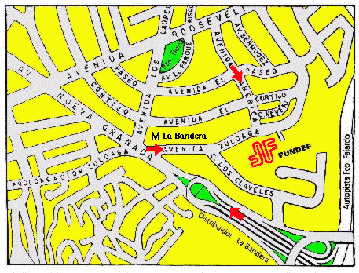

HOME FUNDEF
Acceso
ES FACIL LLEGAR A FUNDEF:
Por carro: Viviendo por la Autopista Francisco Fajardo (Valle-Coche), tome la salida Avenida Nueva Granada, y luego, al pasar por debajo de dos elevados, gire inmediatamente a la derecha para integrarse a la Avenida Zuloaga.

Por Metro: Llegue a la Estación La Bandera, y tome la salida Avenida Zuloaga a su izquierda; recorra dos cuadras hasta FUNDEF.